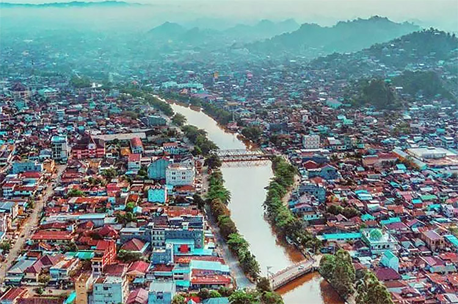

Sejarah

Sebelum masuknya suku-suku dari Sarawak dan suku-suku pendatang dari luar pulau, wilayah ini sangat jarang penduduknya. Sebelum kedatangan Belanda terdapat beberapa kerajaan yang berada di Kalimantan Timur, diantaranya adalah Kerajaan Kutai (beragama Hindu), Kesultanan Kutai Kartanegara ing Martadipura, Kesultanan Pasir dan Kesultanan Bulungan.
Menurut Hikayat Banjar, wilayah Kalimantan Timur (Pasir, Kutai, Berau, Karasikan) merupakan sebagian dari wilayah taklukan Kesultanan Banjar, bahkan sejak jaman Hindu. Dalam Hikayat Banjar menyebutkan bahwa pada paruh pertama abad ke-17 Sultan Makassar meminjam tanah sebagai tempat berdagang meliputi wilayah timur dan tenggara Kalimantan kepada Sultan Mustain Billah dari Banjar pada waktu Kiai Martasura diutus ke Makassar dan mengadakan perjanjian dengan I Mangngadaccinna Daeng I Ba’le’ Sultan Mahmud Karaeng Pattingalloang, yaitu Sultan Tallo yang menjabat mangkubumi bagi Sultan Malikussaid Raja Gowa tahun 1638-1654 yang akan menjadikan wilayah Kalimantan Timur sebagai tempat berdagang bagi Kesultanan Makassar (Gowa-Tallo), dengan demikian mulai berdatanganlah etnis asal Sulawesi Selatan. Sejak 13 Agustus 1787, Sultan Tahmidullah II dari Banjar menyerahkan Kalimantan Timur mejadi milik perusahaan VOC Belanda dan Kesultanan Banjar sendiri dengan wilayahnya yang tersisa menjadi daerah protektorat VOC Belanda.
Geografis
Kalimantan Timur merupakan salah satu provinsi terbesar, lalu apa saja wilayah kabupaten dan kotanya? berikut kami sajikan beserta penjelasan singkatnya
Berau
Kabupaten Berau adalah salah satu kabupaten di Provinsi Kalimantan Timur, Indonesia. Ibu kota kabupaten ini terletak di kecamatan Tanjung Redeb. Kabupaten ini memiliki luas wilayah 36.962,37 km² dengan jumlah penduduk sekitar 280.998 orang pada akhir 2023 dan kepadatan penduduk 8 jiwa/km².
Kutai Timur
Kabupaten Kutai Timur adalah salah satu kabupaten di provinsi Kalimantan Timur, Indonesia. Ibu kota kabupaten ini terletak di Kecamatan Sangatta Utara
Bontang
Kota Bontang adalah sebuah kota di provinsi Kalimantan Timur, Indonesia. Kota ini terletak sekitar 120 kilometer dari Kota Samarinda, berbatasan langsung dengan Kabupaten Kutai Timur di utara dan barat, Kabupaten Kutai Kartanegara di selatan dan Selat Makassar di timur.
Kutai Kartanegara
Kabupaten Kutai Kartanegara merupakan sebuah wilayah kabupaten yang terletak di provinsi Kalimantan Timur, Indonesia. Ibu kotanya berada di kecamatan Tenggarong, yang berbatasan dengan Kota Samarinda
Samarinda
Samarinda merupakan ibu kota dari provinsi Kalimantan Timur, Indonesia. Samarinda adalah kota dengan penduduk terbesar di seluruh Pulau Kalimantan, yaitu dengan jumlah penduduk sebanyak 856.360 jiwa (2023).[
Kutai Barat
Kabupaten Kutai Barat adalah salah satu kabupaten di provinsi Kalimantan Timur, Indonesia. Pusat pemerintahan kabupaten ini terletak di ibukota Sendawar. Kutai Barat merupakan pemekaran dari wilayah Kabupaten Kutai yang telah ditetapkan berdasarkan UU. Nomor 47 Tahun 1999.
Balikpapan
Kota Balikpapan adalah sebuah kota di provinsi Kalimantan Timur, Indonesia. Balikpapan menjadi kota terbesar kedua di Kalimantan Timur, setelah Kota Samarinda, dengan total penduduk sebanyak 733.396 jiwa pada pertengahan tahun 2023.
Penajam Paser Utara
Kabupaten Penajam Paser Utara adalah sebuah kabupaten di provinsi Kalimantan Timur, Indonesia. Ibu kotanya terletak di Penajam
Paser
Kabupaten Paser adalah sebuah kabupaten di provinsi Kalimantan Timur, Indonesia. Ibu kota kabupaten ini terletak di kecamatan Tanah Grogot. Penduduk kabupaten Paser pada akhir tahun 2023 berjumlah 303.424 jiwa, dengan rincian laki-laki berjumlah 156.903 jiwa dan perempuan berjumlah 146.521 jiwa
Wisata
Bagaimana, sudah tertarik dengan kalimantan timur? jika sudah, mari kami tunjukkan beberapa wisata di Kalimantan Timur yang pasti kamu sukai
Labuan Cermin

Danau Labuan Cermin adalah salah satu objek wisata air yang berlokasi di Desa Labuan Kelambu, Kecamatan Biduk-biduk, Kabupaten Berau, Kalimantan Timur. Tempat wisata alam ini dikelola oleh masyarakat sekitar bekerja sama dengan Lembaga Masyarakat Labuan Cermin yang menaunginya
Bukit Bangkirai

Bukit Bangkirai adalah kawasan wisata alam yang dikelola PT Inhutani I Unit I Balikpapan. Kawasan wisata ini terletak di Kecamatan Samboja, Kabupaten Kutai Kartanegara, Kalimantan Timur. Bukit Bangkirai dapat ditempuh melalui perjalanan darat selama 1,5 jam dari Kota Balikpapan.